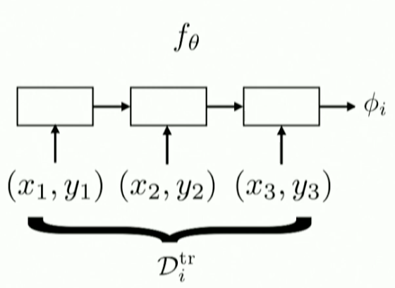

MetaLearning Learning Note - 2
Stanford CS330: Multi-Task and Meta-Learning, 2019 | Lecture 3 - Optimization-Based Meta-Learning
- Recap the probabilistic formulation of meta-learning
- general recipe of meta-learning algorithm
- black box adaption appraoches
- optimization-based meta-learning algorithm
Recap
meta-learning to learn the then to learn in train dataset.
We will use omniglot dataset. 1623 characters 50 different alphabets.
In her's introduction to the meta-supervised learning:
Input is the
The steps to design a meta-learning algorithm
- choosing a form of
- choosing how to optimizae
Treat as a inference problem?
Black-Box adaption

we ca see we use to train data and generate the results parametersIn my opinion, they train to generate then use the use to generate we need to let this loss to get minimized!
Yes the step of black box training:
- sample task
- sample disjoint dataset
- Compute
- Update using
Challenge: Output all neural net parameters doest not seem scalable.
We only ouput sufficient statistics (SNAIL!) Oh I read this paper but I don't understand. Let me try to review this paper tommorrow.
The first Homework is omnigenet.
The proble of Black-Box adaption need a large number of meta-learning dataset. - data inefficent.
Optimiation Based Inference
Motivation: in the above problem, to let the become scalable, we only genereate several fixed parameter from our meta-learner. How can we genereate all parameters?
First we get the formula:
whye in the behind of the formula?
meta parameter are server as prior parameter. ( Recap: Fine-tune your parameters in the test data set!)
Pre-training can be taken as art more than others.
Our goal:
and MAML:
key idea: acquire
- Sample task
- Sample disjoint datasets , from
- Optimize
- use from step 3's trainging to update
Specificly, the phi is theta its self. And MAML summarized alll task's gradient to do a 'the whole gradient steps' to find the best value.
Shall we care the second order derivative?
Follow her formula:
Let us see the GD process of this formula.
I consider the first derivative for is second derivative for ?
Let
is a hessian matrix for this problem.
I am a little confused about the who is the meta-parameters?
So it can repeate computing the higher-order derivations.